- Armatex
- Złączki zaciskane
- Mijanka wz 6086
Besco · Miedź press, profil M · woda
Mijanka wz miedziany press, profil M 6086
Mijanka wz z linii miedź press, profil M · woda: 4 rozmiary od 12 × 12 do 22 × 22 mm. Zastosowanie: woda, ogrzewanie, przemysł. Norma EN 1254-7.
- Rozmiary
- 4
- Ciśnienie
- 16 bar
- Temperatura
- −10…110 °C

Rozmiary i numery artykułów
Źródło: katalog Besco 2026| Rozmiar | Nr artykułu | Worek | Karton | Lista |
|---|---|---|---|---|
| 12 × 12 | 683601212 | 10 szt. | 60 szt. | |
| 15 × 15 | 683601515 | 10 szt. | 40 szt. | |
| 18 × 18 | 683601818 | 10 szt. | 30 szt. | |
| 22 × 22 | 683602222 | 5 szt. | 20 szt. |
- Linia
- Miedź press, profil M · woda
- Zastosowanie
- woda, ogrzewanie, przemysł
- Norma
- EN 1254-7
- Aprobaty
- DVGWWRASRISE
- Nazwa w katalogu
- Partial Crossover i/a
Zapytaj o ofertę na mijanka wz 6086.
Dodaj rozmiary do listy przyciskiem „Dodaj” albo od razu napisz do nas. Ceny hurtowe, dostępność i terminy przygotujemy w ciągu jednego dnia roboczego.
Inne produkty w linii
Szukaj w linii Miedź press M · woda Łuk 90° ww6002 · 14 rozm.
Łuk 90° ww6002 · 14 rozm. Łuk 90° wz6001 · 11 rozm.
Łuk 90° wz6001 · 11 rozm. Łuk 45° wz6040 · 11 rozm.
Łuk 45° wz6040 · 11 rozm.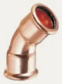
Łuk 45° ww6041 · 11 rozm. Trójnik równoprzelotowy6130 · 11 rozm.
Trójnik równoprzelotowy6130 · 11 rozm. Trójnik redukcyjny6130R · 44 rozm.
Trójnik redukcyjny6130R · 44 rozm.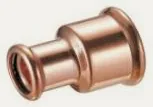
Mufa redukcyjna ww6240 · 18 rozm.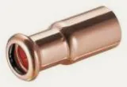
Redukcja wz6243 · 28 rozm.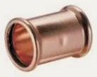
Mufa6270 · 11 rozm.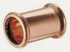
Mufa przesuwna6271 · 8 rozm.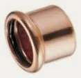
Zaślepka6301 · 10 rozm. Półśrubunek kątowy 90°C6002G · 1 rozm.
Półśrubunek kątowy 90°C6002G · 1 rozm.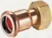
Półśrubunek z GWC6359G · 1 rozm.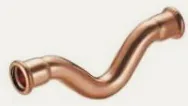
Mijanka ww6085 · 4 rozm. Kołnierz z końcówką press PN 166510 · 4 rozm.
Kołnierz z końcówką press PN 166510 · 4 rozm. Kolano 90° z GW6090G · 5 rozm.
Kolano 90° z GW6090G · 5 rozm. Kolano 90° z GZ6092G · 5 rozm.
Kolano 90° z GZ6092G · 5 rozm.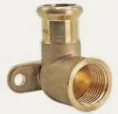
Kolano ścienne z GW6472G · 2 rozm. Złączka z GW6270G · 16 rozm.
Złączka z GW6270G · 16 rozm.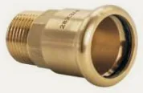
Złączka z GZ6243G · 20 rozm.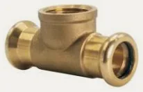
Trójnik z GW6130G · 18 rozm. Półśrubunek z GW6359G · 6 rozm.
Półśrubunek z GW6359G · 6 rozm.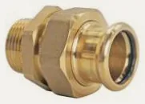
Śrubunek z GZ (uszczelnienie płaskie)6331G · 6 rozm. Śrubunek z GW (uszczelnienie płaskie)6330G · 6 rozm.
Śrubunek z GW (uszczelnienie płaskie)6330G · 6 rozm. Śrubunek press × press (uszczelnienie płaskie)6330 · 6 rozm.
Śrubunek press × press (uszczelnienie płaskie)6330 · 6 rozm. Złączka z GW6281 · 7 rozm.
Złączka z GW6281 · 7 rozm.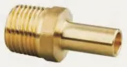
Złączka z GZ6280 · 6 rozm.